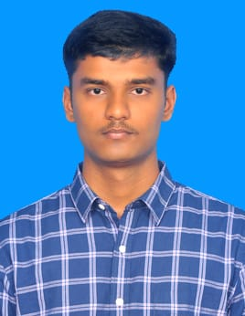

Kishore Balaji P
Objective Statement
Enthusiastic and goal-driven second-year Computer Science and Engineering student at VIT-AP University, passionate about web development and programming. Eager to contribute technical expertise and problem-solving skills to innovative projects while continuously learning and growing in the field of technology.
Education
B.Tech in Computer Science and Engineering
VIT-AP University, Amaravati, Andhra Pradesh
Graduating in 2027
Work Experience
Event Management Member
UniQuest Club, VIT-AP University (August 2023 – Present)
- Organized and managed events to promote the club and engage members in professional development activities.
- Collaborated with team members to ensure smooth execution of events and workshops.
CFO & Team Member
Fetch Care Project, VIT-AP University (Dates: [Aug 2024 - Dec 2024])
- on a medical Uberization project aimed at connecting users in rural areas with certified doctors and veterinarians through a mobile app and website.
- Handled financial planning, budgeting, and marketing strategies to support project execution
Skills
- Programming Languages: Python, Java, C, C++
- Web Development: HTML, CSS, JavaScript
- Databases: SQL
- Tools & Platforms: Dev C++, Visual Studio Code
- Soft Skills: Leadership, Teamwork, Communication
Awards and Achivements
- Runner-Up in Chess Competition
- Former captain of the school Kabaddi team, where I led the team to participate and perform successfully in several tournaments.
- Multiple awards in various school-level competitions.
- Basic Python and SQL Certificate (HackerRank).
Other